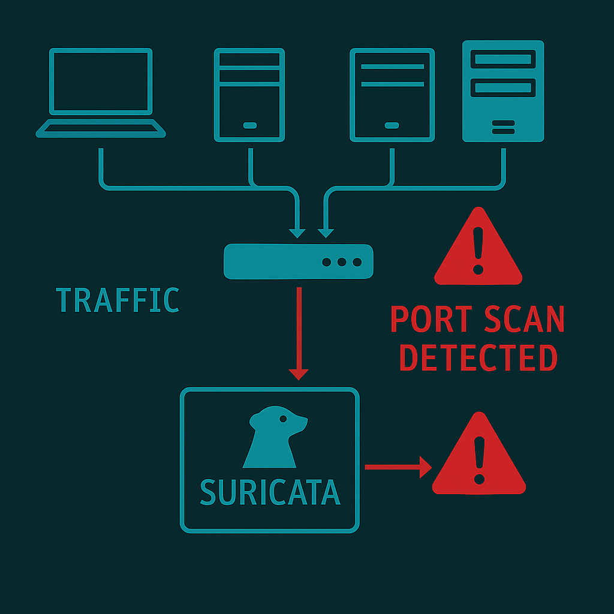
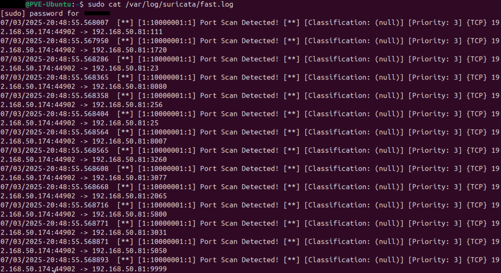

In the realm of network security, detecting unauthorized access attempts is crucial for safeguarding sensitive information and maintaining the integrity of systems. One common method employed by attackers is port scanning, which involves probing a network to identify open ports and services. This project aims to utilize Suricata, an open-source network threat detection engine, to effectively detect and analyze port scans on a network.
I do not condone the use or abuse of the software or techniques described here for malicious purposes. All work here was performed using my own private hardware in my personal networking lab.
This required two computers (I used Proxmox VMs):
Any Linux distro should work. I had template VMs set for Ubuntu and Fedora ready to go so used them for convenience.
Install Suricata on the target Ubuntu system.
sudo apt install suricataCheck the network interface name. This is needed in the next step.
ip addr showEdit the main Suricata config file:
sudo nano /etc/suricata/suricata.yamlFind and modify the interface in this section:
af-packet:
– interface: eth0 # Change to your network interface name
Create a custom port scan detection rules file:
sudo nano /etc/suricata/rules/local.rulesAdd this single rule:
alert tcp any any -> $HOME_NET any (msg:”Port Scan Detected”; flags:S; threshold: type threshold, track by_src, count 5, seconds 10; sid:1000001; rev:1;)
**Rule Explanation:**
Edit the Suricata config to include your custom rules:
sudo nano /etc/suricata/suricata.yamlFind the `rule-files` section and add:
rule-files:
– local.rules
Ensure the path where the rules files are stored is the same as the path specified in the yaml file.
sudo suricata -c /etc/suricata/suricata.yaml -i ens18 -vsudo dnf install nmapI wanted to get a packet capture for later analysis. I did so here in a separate terminal window before starting the port scan. This is optional.
tcpdump -w portscanpacketcapture.pcapnmap -F -sS 192.168.50.81In the image above, ports 22, 3389, and 3390 are shown as open. I opened these ports on purpose for easy access to my virtual machines in my local network.
Nmap sends SYN packets (which are used to initiate a TCP connection) to the target ports. The response from the target will indicate whether the port is open, closed, or filtered:
The stealthiness of a SYN scan comes from the fact that it does not complete the TCP handshake. In a SYN scan, Nmap sends the SYN packet but does not send the final ACK. This means that the connection is never fully established, which can help avoid detection by some security systems that log completed connections.
Back on the target Ubuntu machine. check the Suricata logs:
sudo tail -f /var/log/suricata/fast.logThe log shows Suricata has detected the SYN packets using the custom rule I defined.
I got some experience using Nmap and Suricata. I learned there are many different kinds of port scans and you need different rules to detect them in Suricata. This seems like it can be a rabbit hole with all the options for defining rules.
This simple setup demonstrates you can install, configure, and operate Suricata for basic threat detection. This project shows the importance of network monitoring and the role of tools like Suricata in enhancing cybersecurity defenses
That’s it!